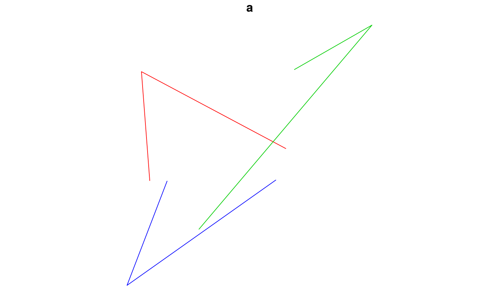
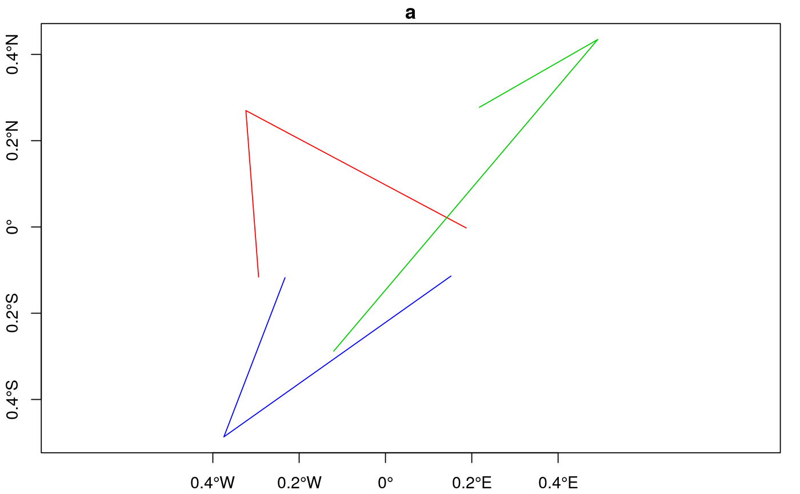
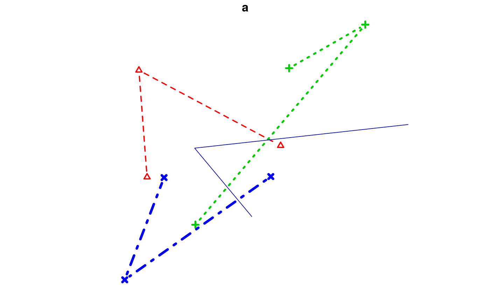
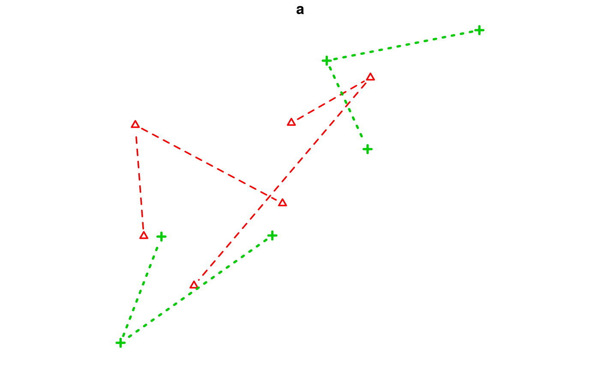
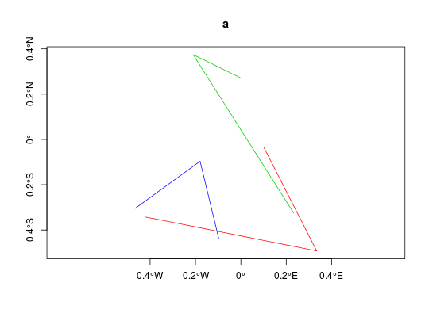
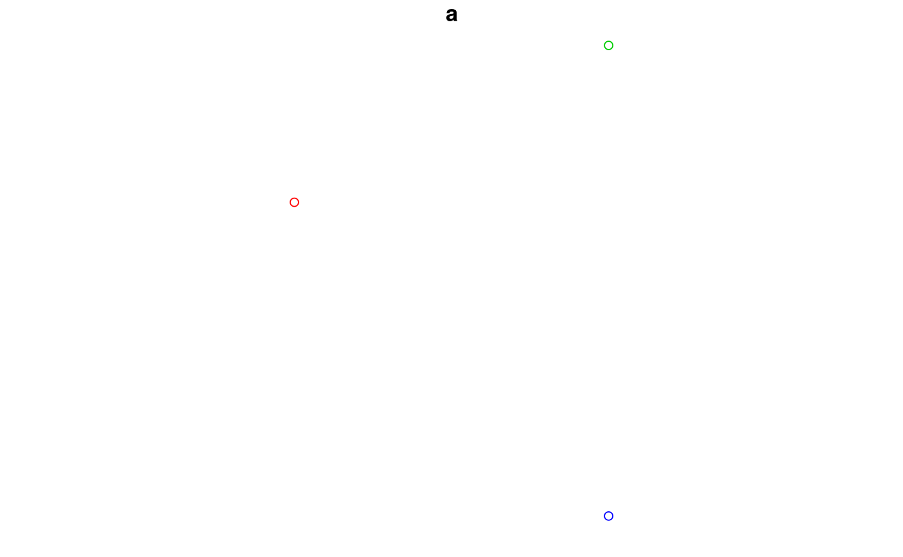
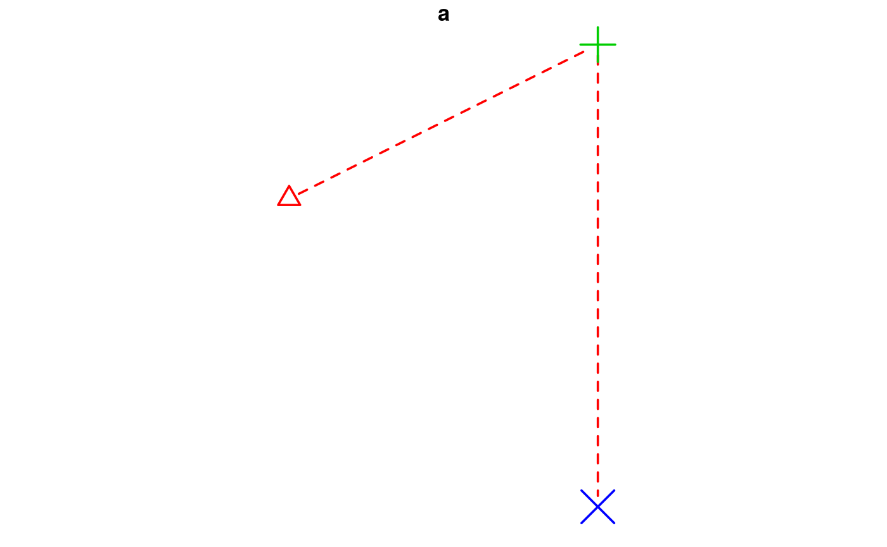
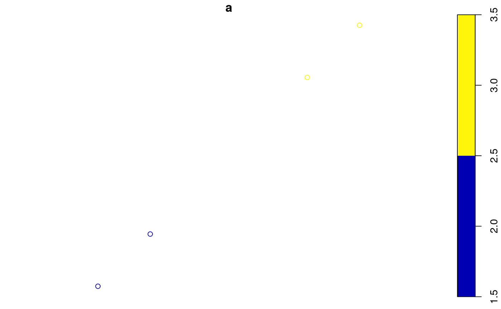
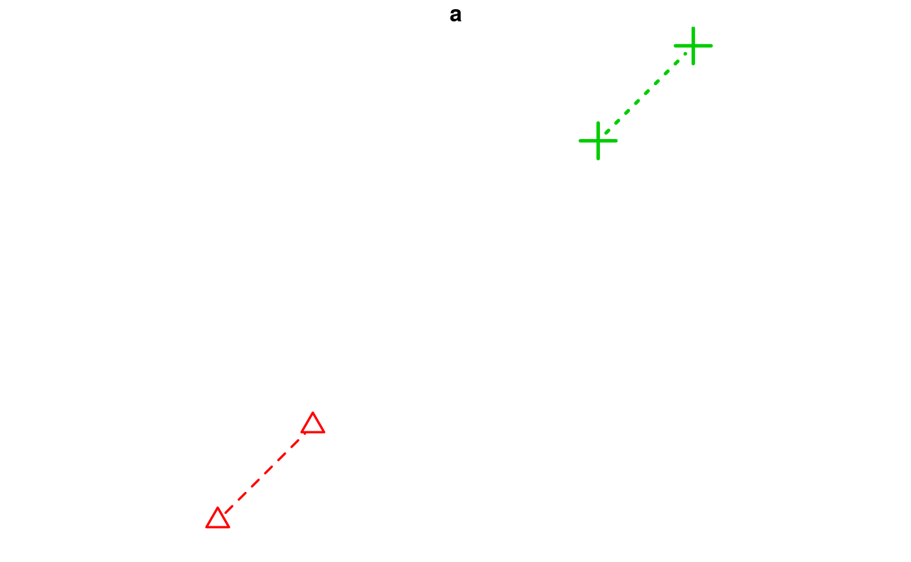
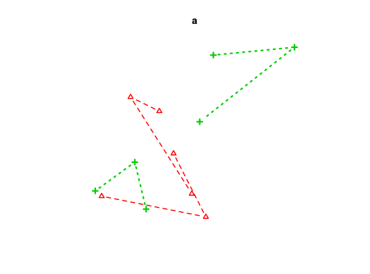

Plot sf object
blue-pink-yellow color scale
# S3 method for sf plot(x, y, ..., col = NULL, main, pal = NULL, nbreaks = 10, breaks = "pretty", max.plot = if (is.null(n <- options("sf_max.plot")[[1]])) 9 else n, key.pos = if (ncol(x) > 2) NULL else 4, key.size = lcm(1.8)) # S3 method for sfc_POINT plot(x, y, ..., pch = 1, cex = 1, col = 1, bg = 0, lwd = 1, lty = 1, type = "p", add = FALSE) # S3 method for sfc_MULTIPOINT plot(x, y, ..., pch = 1, cex = 1, col = 1, bg = 0, lwd = 1, lty = 1, type = "p", add = FALSE) # S3 method for sfc_LINESTRING plot(x, y, ..., lty = 1, lwd = 1, col = 1, pch = 1, type = "l", add = FALSE) # S3 method for sfc_CIRCULARSTRING plot(x, y, ...) # S3 method for sfc_MULTILINESTRING plot(x, y, ..., lty = 1, lwd = 1, col = 1, pch = 1, type = "l", add = FALSE) # S3 method for sfc_POLYGON plot(x, y, ..., lty = 1, lwd = 1, col = NA, cex = 1, pch = NA, border = 1, add = FALSE, rule = "evenodd") # S3 method for sfc_MULTIPOLYGON plot(x, y, ..., lty = 1, lwd = 1, col = NA, border = 1, add = FALSE, rule = "evenodd") # S3 method for sfc_GEOMETRYCOLLECTION plot(x, y, ..., pch = 1, cex = 1, bg = 0, lty = 1, lwd = 1, col = 1, border = 1, add = FALSE) # S3 method for sfc_GEOMETRY plot(x, y, ..., pch = 1, cex = 1, bg = 0, lty = 1, lwd = 1, col = 1, border = 1, add = FALSE) # S3 method for sfg plot(x, ...) plot_sf(x, xlim = NULL, ylim = NULL, asp = NA, axes = FALSE, bgc = par("bg"), ..., xaxs, yaxs, lab, setParUsrBB = FALSE, bgMap = NULL, expandBB = c(0, 0, 0, 0), graticule = NA_crs_, col_graticule = "grey") sf.colors(n = 10, cutoff.tails = c(0.35, 0.2), alpha = 1, categorical = FALSE)
| x | object of class sf |
|---|---|
| y | ignored |
| ... | further specifications, see plot_sf and plot |
| col | color |
| main | title for plot ( |
| pal | palette function, similar to rainbow; if omitted, sf.colors is used |
| nbreaks | number of colors breaks (ignored for |
| breaks | either a numeric vector with the actual breaks, or a name of a method accepted by the |
| max.plot | integer; lower boundary to maximum number of attributes to plot; the default value (9) can be overriden by setting the global option |
| key.pos | integer; which side to plot a color key: 1 bottom, 2 left, 3 top, 4 right. Set to |
| key.size | amount of space reserved for the key (labels) |
| pch | plotting symbol |
| cex | symbol size |
| bg | symbol background color |
| lwd | line width |
| lty | line type |
| type | plot type: 'p' for points, 'l' for lines, 'b' for both |
| add | logical; add to current plot? |
| border | color of polygon border |
| rule | see polypath; for |
| xlim | see plot.window |
| ylim | see plot.window |
| asp | see below, and see par |
| axes | logical; should axes be plotted? (default FALSE) |
| bgc | background color |
| xaxs | see par |
| yaxs | see par |
| lab | see par |
| setParUsrBB | default FALSE; set the |
| bgMap | object of class |
| expandBB | numeric; fractional values to expand the bounding box with, in each direction (bottom, left, top, right) |
| graticule | logical, or object of class |
| col_graticule | color to used for the graticule (if present) |
| n | integer; number of colors |
| cutoff.tails | numeric, in [0,0.5] start and end values |
| alpha | numeric, in [0,1], transparency |
| categorical | logical; do we want colors for a categorical variable? (see details) |
plot.sf maximally plots max.plot maps with colors following from attribute columns,
one map per attribute. It uses sf.colors for default colors. For more control over individual maps,
set parameter mfrow with par prior to plotting, and plot single maps one by one.
plot.sfc plots the geometry, additional parameters can be passed on
to control color, lines or symbols.
plot_sf sets up the plotting area, axes, graticule, or webmap background; it
is called by all plot methods before anything is drawn.
The argument setParUsrBB may be used to pass the logical value TRUE to functions within plot.Spatial. When set to TRUE, par(“usr”) will be overwritten with c(xlim, ylim), which defaults to the bounding box of the spatial object. This is only needed in the particular context of graphic output to a specified device with given width and height, to be matched to the spatial object, when using par(“xaxs”) and par(“yaxs”) in addition to par(mar=c(0,0,0,0)).
The default aspect for map plots is 1; if however data are not
projected (coordinates are long/lat), the aspect is by default set to
1/cos(My * pi)/180) with My the y coordinate of the middle of the map
(the mean of ylim, which defaults to the y range of bounding box). This
implies an Equirectangular projection.
non-categorical colors from sf.colors were taken from bpy.colors, with modified cutoff.tails defaults
If categorical is TRUE, default colors are from http://www.colorbrewer2.org/ (if n < 9, Set2, else Set3).
# plot linestrings: l1 = st_linestring(matrix(runif(6)-0.5,,2)) l2 = st_linestring(matrix(runif(6)-0.5,,2)) l3 = st_linestring(matrix(runif(6)-0.5,,2)) s = st_sf(a=2:4, b=st_sfc(l1,l2,l3)) plot(s, col = s$a, axes = FALSE)plot(s, col = s$a)ll = "+init=epsg:4326 +proj=longlat +datum=WGS84 +no_defs +ellps=WGS84 +towgs84=0,0,0" st_crs(s) = ll plot(s, col = s$a, axes = TRUE)plot(s, col = s$a, lty = s$a, lwd = s$a, pch = s$a, type = 'b')# plot multilinestrings: ml1 = st_multilinestring(list(l1, l2)) ml2 = st_multilinestring(list(l3, l4)) ml = st_sf(a = 2:3, b = st_sfc(ml1, ml2)) plot(ml, col = ml$a, lty = ml$a, lwd = ml$a, pch = ml$a, type = 'b')# plot points: p1 = st_point(c(1,2)) p2 = st_point(c(3,3)) p3 = st_point(c(3,0)) p = st_sf(a=2:4, b=st_sfc(p1,p2,p3)) plot(p, col = s$a, axes = TRUE)plot(p, col = s$a)plot(p, col = p$a, pch = p$a, cex = p$a, bg = s$a, lwd = 2, lty = 2, type = 'b')# multipoints: mp1 = st_multipoint(matrix(1:4,2)) mp2 = st_multipoint(matrix(5:8,2)) mp = st_sf(a = 2:3, b = st_sfc(mp1, mp2)) plot(mp)#> Warning: n same as number of different finite values\neach different finite value is a separate classplot(mp, col = mp$a, pch = mp$a, cex = mp$a, bg = mp$a, lwd = mp$a, lty = mp$a, type = 'b') # polygon: outer = matrix(c(0,0,10,0,10,10,0,10,0,0),ncol=2, byrow=TRUE) hole1 = matrix(c(1,1,1,2,2,2,2,1,1,1),ncol=2, byrow=TRUE) hole2 = matrix(c(5,5,5,6,6,6,6,5,5,5),ncol=2, byrow=TRUE) pl1 = st_polygon(list(outer, hole1, hole2)) pl2 = st_polygon(list(outer+10, hole1+10, hole2+10)) po = st_sf(a = 2:3, st_sfc(pl1,pl2)) plot(po, col = po$a, border = rev(po$a), lwd=3)# multipolygon r10 = matrix(rep(c(0,10),each=5),5) pl1 = list(outer, hole1, hole2) pl2 = list(outer+10, hole1+10, hole2+10) pl3 = list(outer+r10, hole1+r10, hole2+r10) mpo1 = st_multipolygon(list(pl1,pl2)) mpo2 = st_multipolygon(list(pl3)) mpo = st_sf(a=2:3, b=st_sfc(mpo1,mpo2)) plot(mpo, col = mpo$a, border = rev(mpo$a), lwd = 2) # geometrycollection: gc1 = st_geometrycollection(list(mpo1, st_point(c(21,21)), l1 * 2 + 21)) gc2 = st_geometrycollection(list(mpo2, l2 - 2, l3 - 2, st_point(c(-1,-1)))) gc = st_sf(a=2:3, b = st_sfc(gc1,gc2)) plot(gc, cex = gc$a, col = gc$a, border = rev(gc$a) + 2, lwd = 2)sf.colors(10)#> [1] "#0000B3FF" "#0400FFFF" "#4500FFFF" "#8500FFFF" "#C527D8FF" "#FF50AFFF" #> [7] "#FF7A85FF" "#FFA35CFF" "#FFCC33FF" "#FFF50AFF"